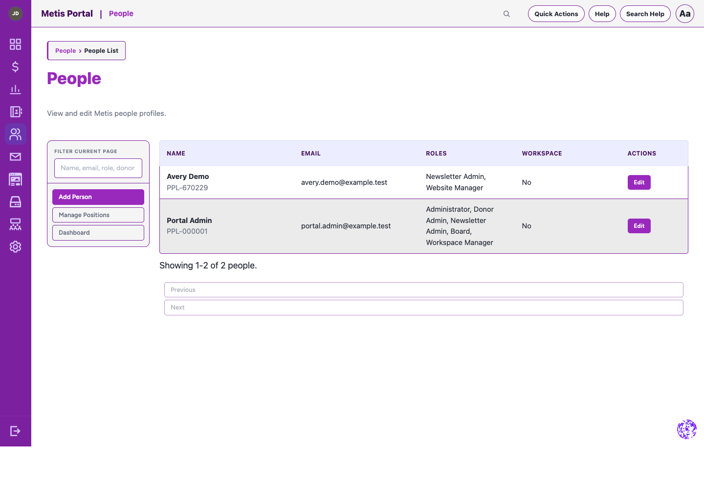

Foundation module
People
Manage the people, roles, access, and organizational context that make the rest of Metis work safely.
What it helps your team do
- Maintain an organization-wide people directory and individual records.
- Define positions, roles, permissions, and reusable role templates.
- Manage access requests, account security methods, activity, and workspace groups.
- Use bulk actions for common people-management work.
Good to know
People is a required foundation module. Its roles and permissions support access control across the platform.
See it in Metis
A real People workspace from a clean development installation. All visible identities and email addresses are fictional.

People — create and manage profiles, roles, and workspace access.